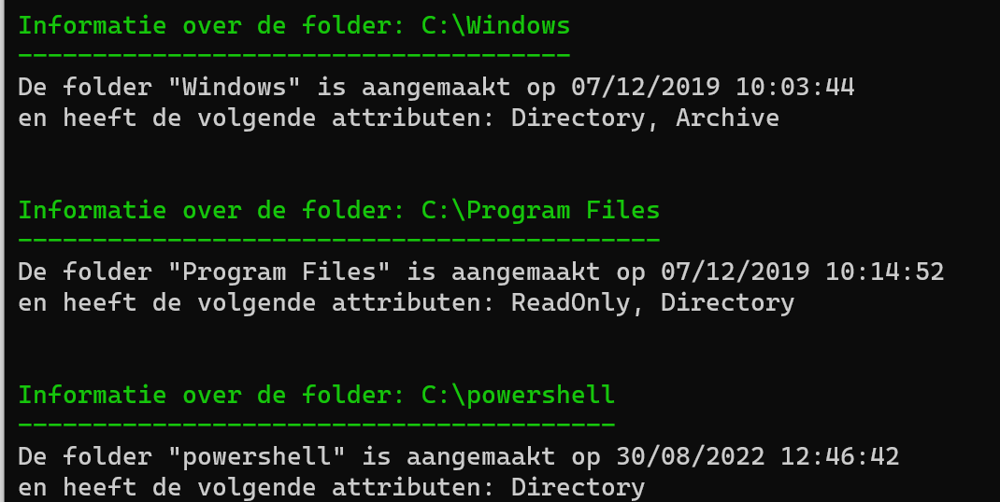

1. Voortgang — for_loop_progress.ps1
Maak met een for-lus een voortgangsbalk van 1 tot en met 100 procent. Gebruik Write-Progress; een korte Start-Sleep mag werk simuleren. Sluit de balk na afloop af.

Mijn antwoord:
Na de lus sluit
Test:
scripts/for_loop_progress.ps1<#
.SYNOPSIS
Toont een voortgangsbalk van 1 tot en met 100 procent.
.DESCRIPTION
Een for-lus telt van 1 tot en met 100. Bij elke stap toont Write-Progress
de voortgang en simuleert Start-Sleep een beetje werk. Na de lus wordt de
voortgangsbalk afgesloten.
.NOTES
Author: Angelo Switon (PXL Student)
.EXAMPLE
./scripts/for_loop_progress.ps1
#>
for ($i = 1; $i -le 100; $i++) {
Write-Progress -Activity 'Search in Progress' -Status "$i% Complete:" -PercentComplete $i
Start-Sleep -Milliseconds 50
}
# De voortgangsbalk afsluiten
Write-Progress -Activity 'Search in Progress' -Completedfor-lus heeft drie delen: $i = 1 (begin), $i -le 100 (zolang dit waar is, gaat de lus door) en $i++ (na elke ronde 1 optellen).Write-Progress toont de balk: -Activity is de titel, -Status de tekst en -PercentComplete hoe ver de balk gevuld is. Start-Sleep -Milliseconds 50 simuleert werk, zodat je de balk ziet bewegen (± 5 seconden in totaal).Na de lus sluit
Write-Progress -Completed de balk af.Test:
./scripts/for_loop_progress.ps1 → bovenaan verschijnt Search in Progress met een balk die van 1% tot 100% loopt en daarna verdwijnt.
Geavanceerd Antwoord:
De voortgang berekenen voor echt werk: de bestanden van een map één voor één overlopen.
De voortgang berekenen voor echt werk: de bestanden van een map één voor één overlopen.
$bestanden = Get-ChildItem -Path C:\Windows -File
$teller = 0
foreach ($bestand in $bestanden) {
$teller++
$procent = [math]::Round($teller / $bestanden.Count * 100)
Write-Progress -Activity 'Bestanden overlopen' -Status "$teller van $($bestanden.Count): $($bestand.Name)" -PercentComplete $procent
Start-Sleep -Milliseconds 100
}
Write-Progress -Activity 'Bestanden overlopen' -Completed$teller / $bestanden.Count * 100 rekent het percentage uit (Course, hoofdstuk 08); [math]::Round() maakt er een geheel getal van.-Status toont bij elke stap welk bestand aan de beurt is, bv. 3 van 25: notepad.exe.
2. Excel doorlopen — pxl_view.ps1
Lees example_files/pxl_data.xlsx met de module ImportExcel.
- Lees werkbladen
StudentenenDepartementen. - Toon boven elk overzicht het aantal rijen.
- Toon per student voornaam, naam en woonplaats.
- Toon per departement naam en richting.
- Geef een bruikbare fout wanneer module of bestand ontbreekt.

Mijn antwoord:
Stap 1:
Install-Module -Name ImportExcel -Scope AllUsers
Stap 2:
Eerst controleren we met
Test:
In het Excelbestand staan bij Jan Peeters voornaam en naam omgewisseld; daarom toont het script, net als de screenshot,
Bestand ontbreekt: →
Stap 1:
Install-Module -Name ImportExcel -Scope AllUsers
Stap 2:
scripts/pxl_view.ps1<#
.SYNOPSIS
Toont de studenten en departementen uit pxl_data.xlsx.
.DESCRIPTION
Leest met de module ImportExcel de werkbladen Studenten en Departementen
uit example_files/pxl_data.xlsx. Toont boven elk overzicht het aantal rijen
en daarna met een foreach-lus elke rij. Ontbreekt het bestand, dan
verschijnt een duidelijke foutmelding.
Vereist de module ImportExcel (Install-Module -Name ImportExcel -Scope AllUsers).
.NOTES
Author: Angelo Switon (PXL Student)
.EXAMPLE
./scripts/pxl_view.ps1
#>
$excelBestand = Join-Path $PSScriptRoot '../example_files/pxl_data.xlsx'
if (-not (Test-Path -LiteralPath $excelBestand -PathType Leaf)) {
Write-Error "Het bestand $excelBestand bestaat niet."
} else {
$studenten = Import-Excel -Path $excelBestand -WorksheetName 'Studenten'
$departementen = Import-Excel -Path $excelBestand -WorksheetName 'Departementen'
Write-Host "Overzicht studenten($($studenten.Count)) PXL:" -ForegroundColor Green
foreach ($student in $studenten) {
Write-Host "Student $($student.Voornaam) $($student.Naam) woonachtig te $($student.Woonplaats)"
}
Write-Host "Overzicht departementen($($departementen.Count)) PXL:" -ForegroundColor Green
foreach ($departement in $departementen) {
Write-Host "Departement $($departement.Naam) afdeling $($departement.Richting)"
}
}Install-Module -Name ImportExcel -Scope AllUsers$PSScriptRoot is de map waarin het script staat. Met Join-Path $PSScriptRoot '../example_files/pxl_data.xlsx' vindt het script het bestand altijd, ook als je het vanuit een andere map start.Eerst controleren we met
if of het bestand bestaat. Pas daarna (else) leest Import-Excel de twee werkbladen. Elke rij wordt een object met de kolomnamen als properties: Naam, Voornaam en Woonplaats (Studenten), Naam en Richting (Departementen)..Count geeft het aantal rijen; foreach toont elke rij.Test:
./scripts/pxl_view.ps1 →Overzicht studenten(6) PXL:Student Dominique Houbrechts woonachtig te Kortessem ...Overzicht departementen(5) PXL:Departement Business afdeling Accountancy-fiscaliteit ...In het Excelbestand staan bij Jan Peeters voornaam en naam omgewisseld; daarom toont het script, net als de screenshot,
Student Peeters Jan.Bestand ontbreekt: →
Het bestand ...\example_files\pxl_data.xlsx bestaat niet.
Geavanceerd Antwoord:
Met een volgnummer (zoals het
Met een volgnummer (zoals het
$Teller-voorbeeld in de Course, hoofdstuk 11) en een samenvatting per woonplaats en per departement:$excelBestand = Join-Path $PSScriptRoot '../example_files/pxl_data.xlsx'
$studenten = Import-Excel -Path $excelBestand -WorksheetName 'Studenten'
$departementen = Import-Excel -Path $excelBestand -WorksheetName 'Departementen'
Write-Host "Overzicht studenten($($studenten.Count)) PXL:" -ForegroundColor Green
$teller = 1
foreach ($student in $studenten) {
Write-Host "$teller. Student $($student.Voornaam) $($student.Naam) woonachtig te $($student.Woonplaats)"
$teller++
}
Write-Host 'Aantal studenten per woonplaats:' -ForegroundColor Green
$studenten | Group-Object -Property Woonplaats | Sort-Object Count -Descending | Select-Object Name, Count
Write-Host 'Richtingen per departement:' -ForegroundColor Green
foreach ($groep in ($departementen | Group-Object -Property Naam)) {
Write-Host "$($groep.Name): $($groep.Group.Richting -join ', ')"
}Genk 2 en de andere woonplaatsen 1; Business: Accountancy-fiscaliteit, Marketing, Rechspraktijk en Digital: Systemen- en netwerkbeheer, Software Management.Group-Object (Course, hoofdstuk 03) maakt per waarde één groep. $groep.Group bevat de rijen van die groep, en -join ', ' plakt hun richtingen aan elkaar.
3. Mapinformatie — DirectoriesInfo.ps1
Doorloop met foreach de mappen C:\Windows, C:\Program Files en C:\powershell. Toon voor iedere bestaande map naam, aanmaakdatum en attributen. Maak de lengte van de onderstreping met een geneste for-lus. Meld ontbrekende mappen zonder te stoppen.

Mijn antwoord:
De geneste
Test:
(en hetzelfde voor
Map ontbreekt: bestaat
scripts/DirectoriesInfo.ps1<#
.SYNOPSIS
Toont informatie over enkele mappen.
.DESCRIPTION
Doorloopt met foreach de mappen C:\Windows, C:\Program Files en
C:\powershell. Voor elke bestaande map verschijnen naam, aanmaakdatum en
attributen. De onderstreping wordt gemaakt met een geneste for-lus.
Een ontbrekende map wordt gemeld, waarna het script verdergaat.
.NOTES
Author: Angelo Switon (PXL Student)
.EXAMPLE
./scripts/DirectoriesInfo.ps1
#>
$folders = 'C:\Windows', 'C:\Program Files', 'C:\powershell'
foreach ($folder in $folders) {
if (Test-Path -LiteralPath $folder -PathType Container) {
$folderInfo = Get-Item -LiteralPath $folder
$titel = "Informatie over de folder: $folder"
# Onderstreping: evenveel streepjes als tekens in de titel
$lijn = ''
for ($i = 0; $i -lt $titel.Length; $i++) {
$lijn = $lijn + '-'
}
Write-Host $titel -ForegroundColor Green
Write-Host $lijn -ForegroundColor Green
Write-Host "De folder `"$($folderInfo.Name)`" is aangemaakt op $($folderInfo.CreationTime)"
Write-Host "en heeft de volgende attributen: $($folderInfo.Attributes)"
Write-Host ''
} else {
Write-Host "De folder $folder bestaat niet." -ForegroundColor Red
Write-Host ''
}
}foreach-lus neemt de mappen één voor één. Test-Path -PathType Container controleert of de map bestaat. Bestaat ze niet, dan toont de else-tak een melding en gaat de lus gewoon verder met de volgende map.Get-Item geeft het mapobject met de properties Name, CreationTime en Attributes.De geneste
for-lus (een lus binnen de foreach) plakt evenveel - aan elkaar als de titel tekens heeft ($titel.Length). Zo is de streep altijd even lang als de titel.Test:
./scripts/DirectoriesInfo.ps1 →Informatie over de folder: C:\Windows-------------------------------------De folder "Windows" is aangemaakt op ...en heeft de volgende attributen: Directory, Archive(en hetzelfde voor
C:\Program Files en C:\powershell)Map ontbreekt: bestaat
C:\powershell niet, dan verschijnt De folder C:\powershell bestaat niet. en de andere mappen worden wel getoond.
Geavanceerd Antwoord:
Met
Met
continue (Course, hoofdstuk 11) en de datum in hetzelfde formaat als de voorbeeldafbeelding:$folders = 'C:\Windows', 'C:\Program Files', 'C:\powershell'
foreach ($folder in $folders) {
if (-not (Test-Path -LiteralPath $folder -PathType Container)) {
Write-Host "De folder $folder bestaat niet." -ForegroundColor Red
continue
}
$folderInfo = Get-Item -LiteralPath $folder
$titel = "Informatie over de folder: $folder"
$lijn = ''
for ($i = 0; $i -lt $titel.Length; $i++) {
$lijn += '-'
}
Write-Host $titel -ForegroundColor Green
Write-Host $lijn -ForegroundColor Green
Write-Host "De folder `"$($folderInfo.Name)`" is aangemaakt op $($folderInfo.CreationTime.ToString('dd/MM/yyyy HH:mm:ss'))"
Write-Host "en heeft de volgende attributen: $($folderInfo.Attributes)"
Write-Host ''
}continue slaat de rest van de lus over en gaat meteen naar de volgende map. Zo hoeft het "normale" werk niet in een else-blok te staan.$lijn += '-' is korter voor $lijn = $lijn + '-'..ToString('dd/MM/yyyy HH:mm:ss') toont de datum als dag/maand/jaar, bv. 01/04/2024 09:21:16.
4. Groepen uit CSV — UserGroupInfo.ps1
Importeer example_files/usergroup.csv en toon eerst alle gebruikers uit GPA, daarna alle gebruikers uit GPB. Gebruik foreach en if; schrijf geen afzonderlijke vaste gebruikersnamen in je code.

Mijn antwoord:
De eerste
Test:
Bestand ontbreekt: →
scripts/UserGroupInfo.ps1<#
.SYNOPSIS
Toont de gebruikers per groep uit usergroup.csv.
.DESCRIPTION
Importeert example_files/usergroup.csv en toont eerst alle gebruikers uit
groep GPA en daarna alle gebruikers uit groep GPB. Ontbreekt het bestand,
dan verschijnt een duidelijke foutmelding.
.NOTES
Author: Angelo Switon (PXL Student)
.EXAMPLE
./scripts/UserGroupInfo.ps1
#>
$csvBestand = Join-Path $PSScriptRoot '../example_files/usergroup.csv'
if (-not (Test-Path -LiteralPath $csvBestand -PathType Leaf)) {
Write-Error "Het bestand $csvBestand bestaat niet."
} else {
$users = Import-Csv -LiteralPath $csvBestand
Write-Host 'Groep A' -ForegroundColor Green
foreach ($user in $users) {
if ($user.Group.Trim() -eq 'GPA') {
Write-Host "`t$($user.Username.Trim())"
}
}
Write-Host 'Groep B' -ForegroundColor Green
foreach ($user in $users) {
if ($user.Group.Trim() -eq 'GPB') {
Write-Host "`t$($user.Username.Trim())"
}
}
}Import-Csv maakt van elke regel een object met de kolomnamen als properties: Naam, Voornaam, Username en Group.De eerste
foreach toont alleen de gebruikers waarvoor if vaststelt dat de groep GPA is, de tweede foreach doet hetzelfde voor GPB. Er staan geen gebruikersnamen in de code: die komen uit het bestand..Trim() is nodig omdat in het CSV-bestand bij sommige regels een spatie na de komma staat (bv. , GPA). Zonder .Trim() is ' GPA' -eq 'GPA' onwaar en ontbreekt edebakker. `t is een tab.Test:
./scripts/UserGroupInfo.ps1 →Groep A: dhoubrechts, egreven, edebakkerGroep B: jpeters, pquaedpeerdtBestand ontbreekt: →
Het bestand ...\example_files\usergroup.csv bestaat niet.
Geavanceerd Antwoord:
Zonder de groepsnamen vast in de code te zetten:
Komt er later een groep
Zonder de groepsnamen vast in de code te zetten:
Group-Object maakt de groepen zelf uit de gegevens.$csvBestand = Join-Path $PSScriptRoot '../example_files/usergroup.csv'
$users = Import-Csv -LiteralPath $csvBestand
$groepen = $users | Group-Object -Property { $_.Group.Trim() } | Sort-Object Name
foreach ($groep in $groepen) {
Write-Host "Groep $($groep.Name)" -ForegroundColor Green
foreach ($user in $groep.Group) {
Write-Host "`t$($user.Username.Trim())"
}
}Groep GPA met dhoubrechts, egreven, edebakker en Groep GPB met jpeters, pquaedpeerdt.-Property { $_.Group.Trim() } groepeert op de groep zonder spaties. Zonder .Trim() zouden GPA en GPA twee verschillende groepen worden.Komt er later een groep
GPC bij, dan toont het script die automatisch, zonder één regel code te wijzigen.
Eindcontrole
- De vier scripts gebruiken de twee meegeleverde bestanden uit
example_files/. - Lege verzamelingen en ontbrekende bestanden zijn afgehandeld.
- De resultaten en testcommando's staan in
answers.md. - Alle scripts parsen zonder syntaxfouten en wijzigingen zijn gepusht.